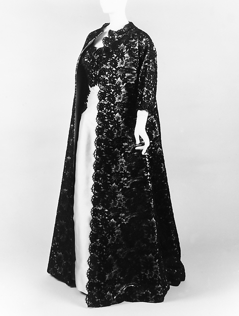
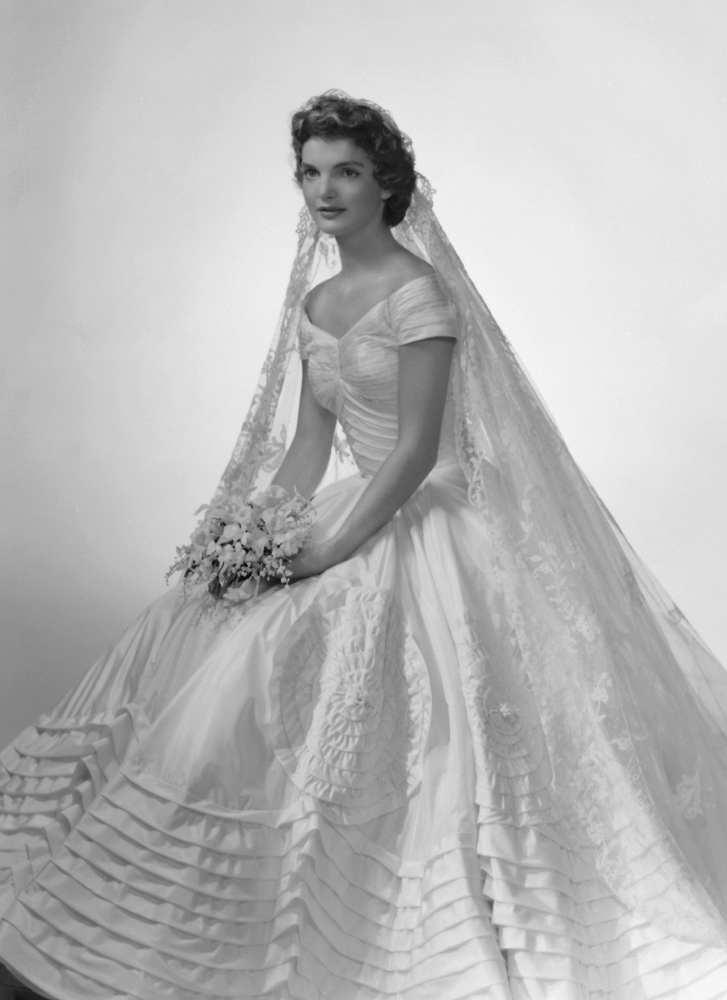
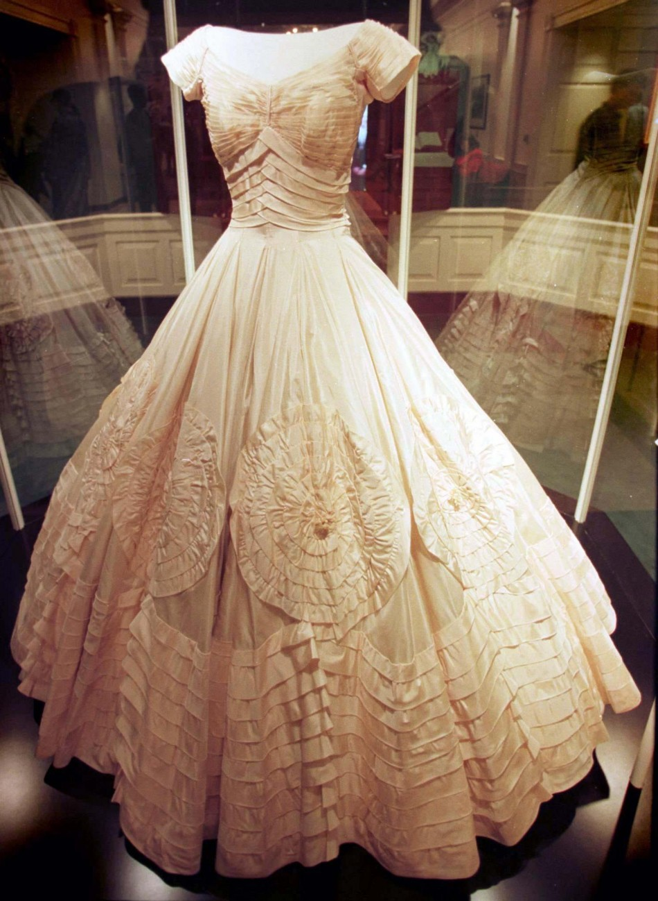

The Story of Passion and Fashion
There are many names in the fashion industry we know, but this name misses most history books, Ann Cole Lowe. Born in Crayton, Alabama in 1898 Ann was born a free woman because of her grand mother's clemency from General Cole. Ann Lowe is a dress designer to the rich and famous. Great-grand, daughter of an Alabama plantation owner and black slave women Georga Tompkins. Ann learned to sew from her mother and grandmother who both sewed for the first families of Montgomery. She is one of six children, and as a child, she loved to sew fabric flowers in which she became know for creating. At the age of 16, Lowe's mother died. In her death, she left four unfinished ballroom dresses. In completing the dress, Ann found passion in the name of fashion.
Men vs Fashion
Ann was married twice, but both marriages ended with the pursuit of her career. She was married off at 14 which was very common during that period. She married Lee Choen in 1912 and had one son. Lee was ten years older then her, but he didn't agree with a business deal she received in the store. A wealth Floridian invited her to Florida to be an in-house seamstress. Lee and Ann argued about the deal, but the argument didn't work in his favor as Lowe left with her son for Florida. She married her seconded husband in Florida, and he wanted a housewife, and Ann was a career woman. While in Florida she got an opportunity to attend the S.T. Taylor Design School in New York City in 1917. This was a once in a lifetime opportunity since Ann never graduated from High School.
Design School
In design school, Lowe was best in class even though the classes were segregated. Her projects were used as examples and references to other students due to the quality of stitch and attention to detail. Ann graduated from Design school in 1919 and moved back to Tampa, Florida and opened the Ann Cohen dress salon in 1920. From 1920 to 1928 she would sell dresses to the elites.
Open Shop
After having geat success in Florida Ann moved back to New York in 1929 at the age of 31. During this time she worked on commission for stores such as Henri Bendel, Chez Sonia, Neiman Marcus, and Saks Fifth Avenue. In 1946, she designed the dress that Olivia de Havilland wore to accept the Academy Award for Best Actress for To Each His Own, although the name on the dress was Sonia Rosenberg.
Jacqueline Kennedy's Wedding
In 1947 Ann got the opportunity to attend Paris Fashion from the New York World. This experience would help see to her continued success in the U.S. for her most noticeable dress. In 1953 she was hired by Jacqueline Bouvier to design her wedding dress for her marriage to Senator John F. Kennedy. Lowe's dress for Jacqueline Bouvier consisted of fifty yards of "ivory silk taffeta with interwoven bands of tucking forming the bodice and similar tucking in large circular designs swept around the full skirt. The dress, which cost $500 (approximately $4,000 today), was described in detail in The New York Times's coverage of the wedding.
End the story with the happy times
Lowe would make over $300,000 a year during this time in here life with fabrics rolling in monthly from France. Later Ann retired in New York with her sister in a Manhattan Avenue in Harlem. Being struck with sickness Ann died February 25, 1981.
***
There are other events in that happend that I left out of the story to try to end the story on a happy note.
Resources
The following websites were used to as resources to help write this story.
Racked
Met Museum
Huffington Post
Ebony 1966 Issue
New York Time
Morning Journal - February 28, 1981
Pittsburgh Post Gazette - February 3, 1998